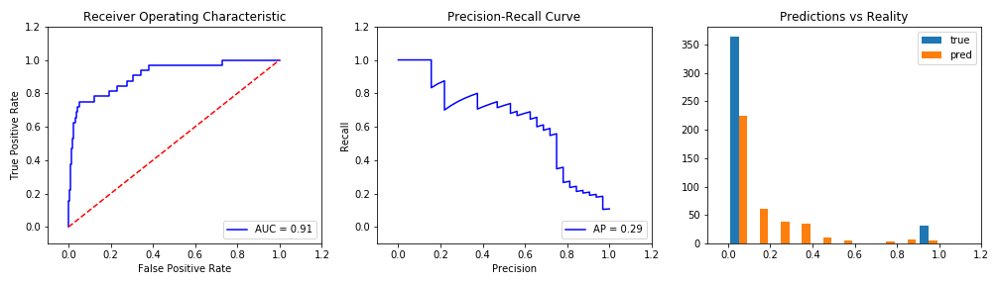

Up sampling Yeas. This will duplicate Yeas until Training is 50% Yeas. All Entries: 1976 Affirmitive examples: 151 (8%) Training: 2924 Affirmitive examples: 1462.0 (50.0%) Testing: 395 Affirmitive examples: 32.0 (8.0%)

0s: 0.92 True Positives: 17 Accuracy: 0.9468354430379747 1s: 0.08 True Negatives: 357 AUC: 0.9084022038567494 False Positives: 6 F1 Score: 0.6181818181818182 False Negatives: 15 Recall (fract of actual yeas found): 0.53125 Precision (correctness of yeas predicted): 0.7391304347826086
Trianed on 2019-04-23_best-guess_binary.csv. Embedding = "word2vec". Model = "VotingClassifier(estimators=[('logistic', LogisticRegression(C=1000000000.0, class_weight='balanced', dual=False, fit_intercept=False, intercept_scaling=1, max_iter=100, multi_class='warn', n_jobs=None, penalty='l2', random_state=None, solver='warn', tol=0.0001, verbose=0, warm_start=Fa... verbose=0, warm_start=False)), ('GaussianNB', GaussianNB(priors=None, var_smoothing=1e-09))], flatten_transform=None, n_jobs=None, voting='soft', weights=[1, 1, 1, 1, 1])".